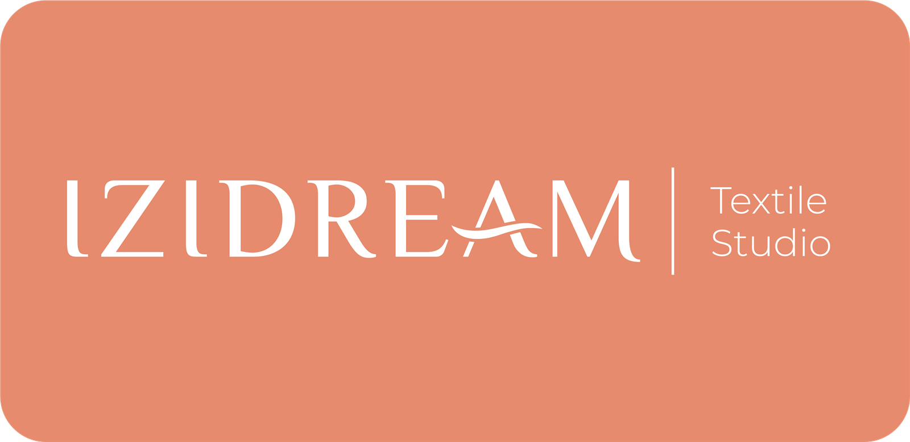
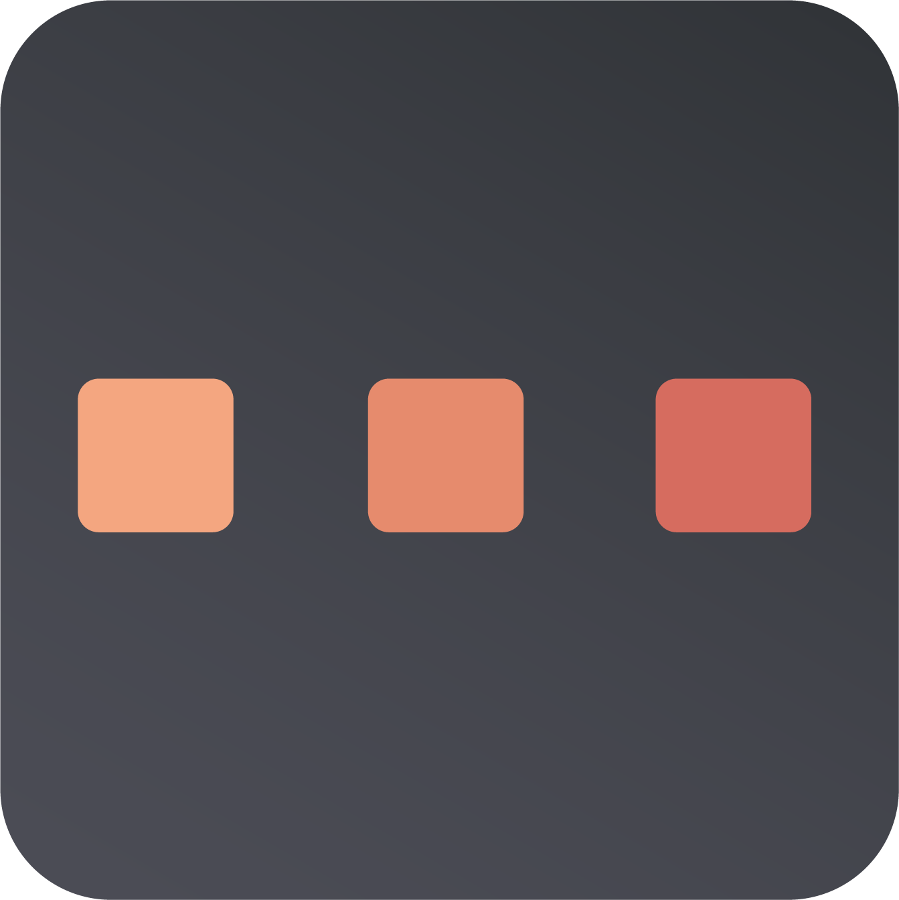
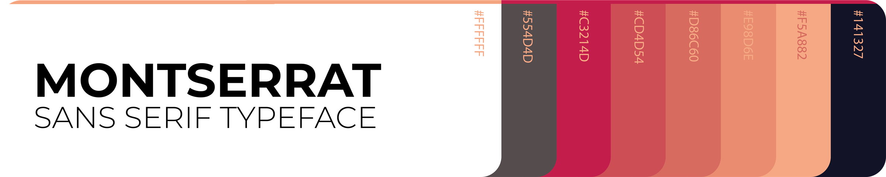
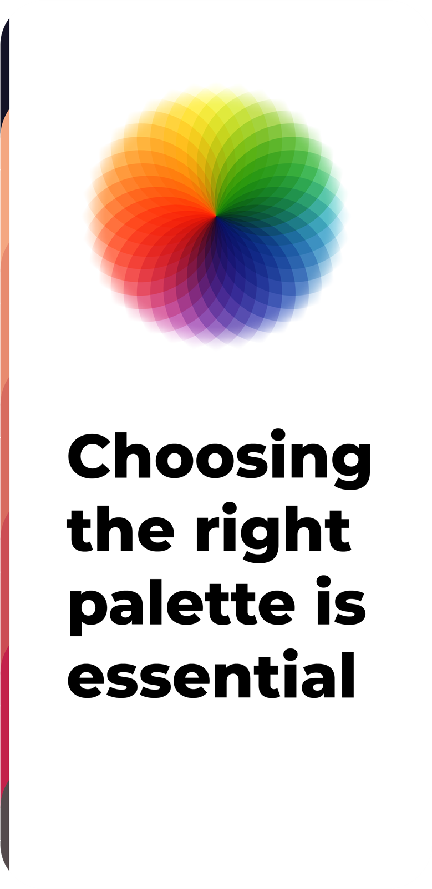
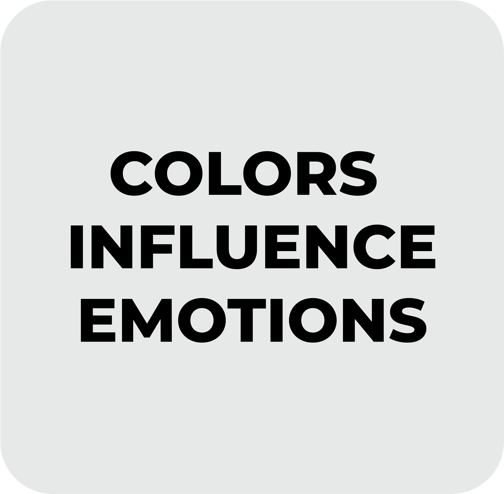
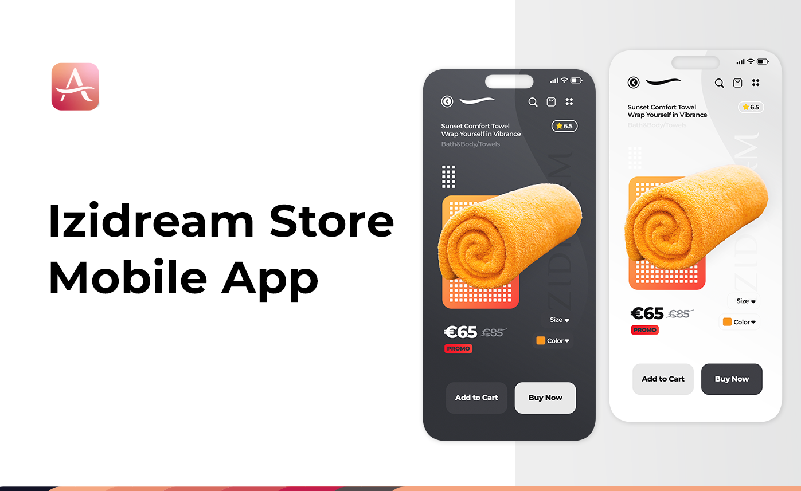
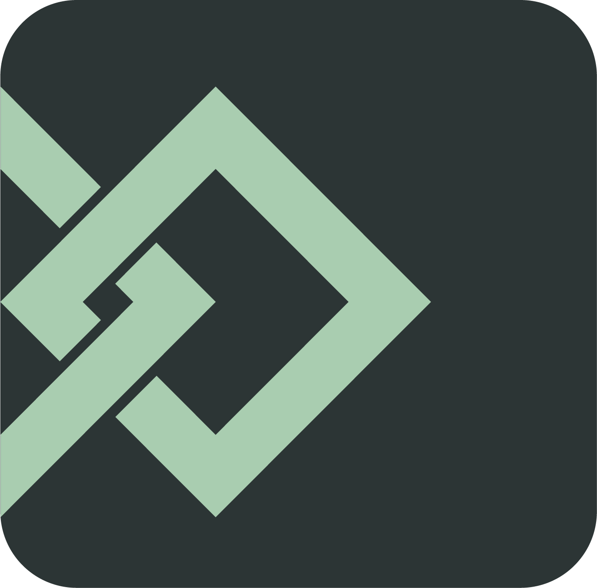

Your brandtakes shape.
ScrollIzidreamTextile Studio


Typeface & palette
Montserrat and a warm coral range




Izitexizitex.bg

Prototype · images and video from bojidar.webflow.io/work/brand-identity